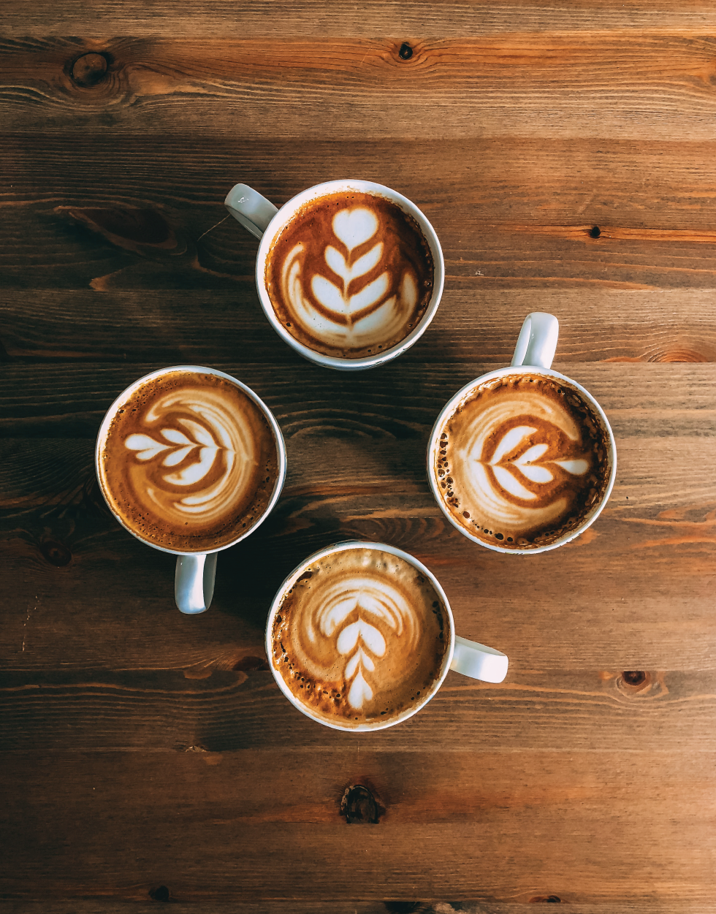
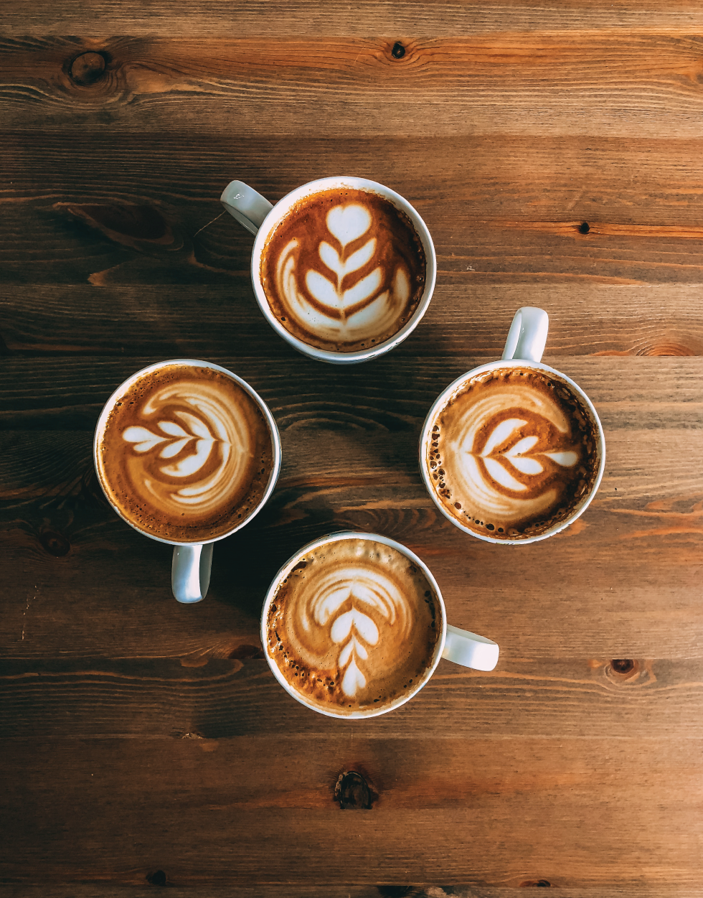
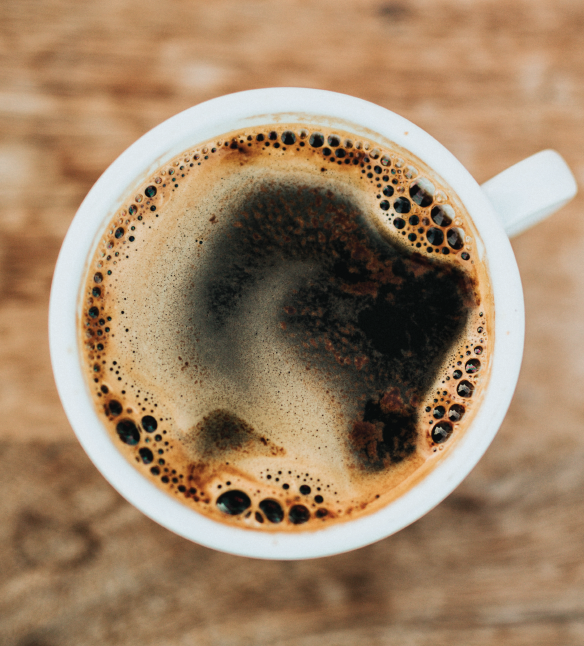

About
Contact
Visit
 

Our Story
Growing up, I worked in this exact location. While it was not the same coffee shop it was today, it is very similar. Since I worked at a coffee shop from such a young age, I understood how much coffee could bring people together. One day, I deiced to take ownership as what we now know as What’s Brewin. I founded What’s Bewin on the idea that people can come together through coffee and I wanted to create an environment for just that.

Mission
&
Values
What’s Brewin’ has been bringing coffee to to the Tomahawk location for many years. What’s Brewin offers good food, locally roasted, fair trade coffee and a comfortable place to study, chat and hangout. There are a varity of options for a variety of people. The way a coffee shop should be!
What’s Brewin is a place that has a unique experience to the local community because it is operated by people who have grown with the community over the years.
All of our ingredients are carefully selected with natural, great taste, and high quality. Our coffee has remained one of the local favorites in the Tomahawk Area for many years.
What’s Brewin offers a variety of different options for a variety of different people. We want to make sure everyone feels welcome and included in the space.